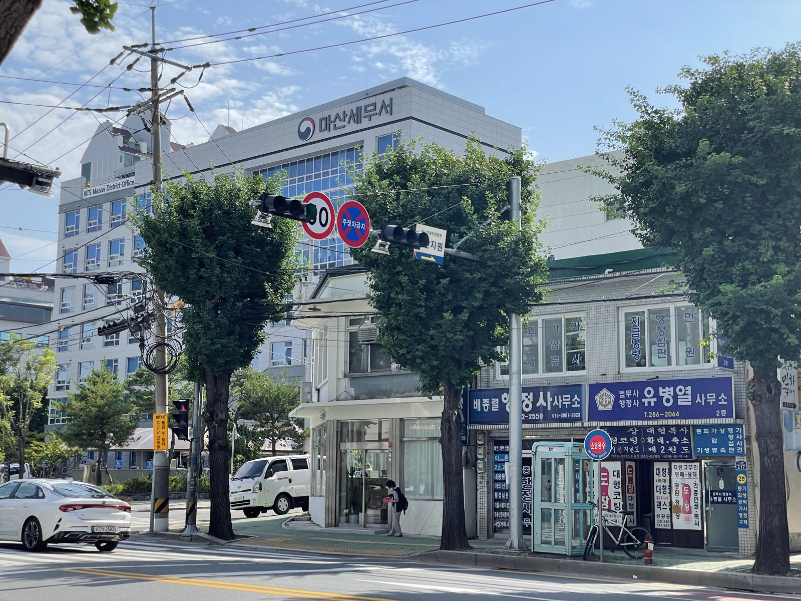

창원지방법원 마산지원 도보 1분
복잡한 법원 서류,
처음부터 끝까지 직접 챙깁니다.
부동산 경매입찰과 등기, 개인회생·파산, 상속까지.
법무사·행정사가 직접 상담하고 직접 작성합니다.



대표 소개
유병열 법무사·행정사
서류 하나하나를 직접 확인하고, 처음 오신 분도 이해할 수 있게 설명드립니다.
- 법무사 · 행정사
- 경남지방법무사회
- 대한법무사협회
- 대한행정사회
진행 순서
상담부터 완료까지
- 상담전화·방문으로 상황을 말씀해 주세요.
- 서류 안내필요한 서류와 예상 기간을 안내해 드립니다.
- 접수·진행서류를 작성하고 법원·등기소에 접수합니다.
- 완료결과를 확인하고 서류를 전달해 드립니다.